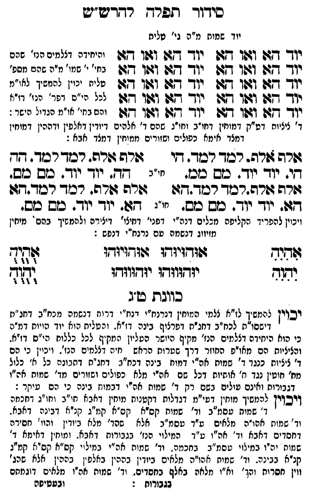

Neue Klartextfassung
[יוד שמות מ"ה גי' טלית] === טבלה === יוד הא ואו הא יוד הא ואו הא יוד הא ואו הא יוד הא ואו הא יוד הא ואו הא יוד הא ואו הא יוד הא ואו הא יוד הא ואו הא יוד הא ואו הא יוד הא ואו הא === סוף טבלה === [והיחידה דצלמים הנז' שהם בחי' י' שמו' מ"ה שהם מספ' טלית יכוין להמשיך לאו"מ לכל הי"ס דפר' הנז' דז"א והם בחי' או"מ הגדול הישר:] [ד' ציציות דט"ק דמוחין דחו"ב וחו"ג שהם ד' אלהים דיודין דאלפין ודההין דמוחין דמלך אימא כפולים ושזורים ממוחין דמלך אבא:] === טבלה === [חו"ב] אלף אלף. למד למד. הי הי. יוד יוד. מם מם. אלף אלף. למד למד. הה הה. יוד יוד. מם מם. [חו"ג] אלף אלף. למד למד. הא הא. יוד יוד. מם מם. אלף אלף. למד למד. הא הא. יוד יוד. מם מם. === סוף טבלה === [ויכוין להפריד הקליפה מכלים דנה"י דפני' דחיצו' דיצירה ולהמשיך בהם מוחין מזיווג דנשמה עם נרנח"י דנפש:] === טבלה === [טור ימין] אִהִיִהִ יִהִוִהִ [טור אמצעי] אוּהוּיוּהוּ אוּהוּיוּהוּ יוּהוּווּהוּ יוּהוּווּהוּ [טור שמאל] אֻהֻיֻהֻ יֻהֻוֻהֻ === סוף טבלה === ■ כוונת ט"ג ■ [יכוין להמשיך לז"א צלמי המוחין דנרנח"י דנח"י דרוח דנשמה מכח"ב דחג"ת דישסו"ת לכח"ב דחג"ת דפרצוף בינה דז"א. והטלית הוא יוד הויות דמ"ה כי הוא היחידה דצלמים הנז' מקיף היושר העליון המקיף לכל כללות הי"ס דז"א. והציציות הם מאו"פ החוזר דרך שערות הראש חיה דצלמים הנז'. ויכוין כי הם ד' ציציות כנגד ד' שמות אה"י דמוח בינה דכח"ב דחג"ת דתבונה כל א' כלול מח' חוטין נגד ח' אותיות דכל שם אה"י מלא כפולים ושזורים מד' שמות אה"ו דגבורות ואינם עולים בשם רק ד' שמות אה"י דמוח בינה כי הם עיקר:] [ויכוין להמשיך מוחין דעי"מ דגדלות דקטנות מוחין דאבא חו"ב וחו"ג דחכמה ד' שמות עסמ"ב וד' שמות קס"א קס"א קמ"ג קנ"א דבינה דאבא. וד' שמות אהו"ה מלאים ע"ד עסמ"ב אלא שהד' מלא ביודין והוו' חסירה דחסדים דאבא וד' אה"ו ע"ד המילוי הנז' בגבורות דאבא. ומוחין דאימא ד' שמות יה"ו במילוי עסמ"ב בחכמה. וד' שמות אה"י במילוי קס"א קס"א קמ"ג קנ"א בבינה. וד' שמות אהו"ה מלאים ביודין בההין באלפין בההין אלא שהג' ווין חסרות והד' וא"ו מלאה באלף בחסדים. וד' שמות אה"ו מלאים דוגמתם בגבורות:]
Original gegen neue OCR · Niqqud für Vergleich ausgeblendet
Original
[יוד שמותK117-001 מ"ה גי' טלית] === טבלה === יוד הא ואו הא יוד הא ואו הא יוד הא ואו הא יוד הא ואו הא יוד הא ואו הא יוד הא ואו הא יוד הא ואו הא יוד הא ואו הא יוד הא ואו הא יוד הא ואו הא === סוף טבלה === [והיחידהK117-002 דצלמים הנז'K117-003 שהם בחי' י' שמו' מ"הK117-004 שהם מספ' טלית יכוין להמשיך לאו"מ לכל הי"ס דפר' הנז' דז"א והםK117-005 בחי' או"מ הגדול הישר:] [ד' ציציותK117-006 דט"ק דמוחין דחו"ב וחו"ג שהם ד' אלהים דיודין דאלפין ודההין דמוחין דמלךK117-007 אימא כפולים ושזורים ממוחין דמלך אבא:] === טבלה === [חו"ב] אלף אלף. למד למד. הי הי.K117-008 יוד יוד. מם מם. אלף אלף. למד למד. הה הה. יוד יוד. מם מם. [חו"ג] אלף אלף. למד למד. הא הא. יוד יוד. מם מם. אלף אלף. למד למד. הא הא. יוד יוד. מם מם. === סוף טבלה === [ויכויןK117-009 להפריד הקליפה מכליםK117-010 דנה"י דפני' דחיצו' דיצירהK117-011 ולהמשיך בהם מוחיןK117-012 מזיווג דנשמה עם נרנח"י דנפש:] === טבלה === [טור ימין] אהיה יהוה [טור אמצעי] אוהויוהו אוהויוהו יוהוווהו יוהוווהו [טור שמאל] אהיה יהוה === סוף טבלה === ■ כוונתK117-013 ט"ג ■ [יכוין להמשיךK117-014 לז"א צלמי המוחין דנרנח"י דנח"י דרוחK117-015 דנשמה מכח"ב דחג"ת דישסו"תK117-016 לכח"ב דחג"ת דפרצוףK117-017 בינה דז"א. והטליתK117-018 הוא יוד הויות דמ"הK117-019 כי הוא היחידה דצלמים הנז' מקיף היושר העליון המקיףK117-020 לכל כללות הי"ס דז"א. והציציותK117-021 הם מאו"פ החוזר דרך שערות הראשK117-022 חיה דצלמים הנז'.K117-023 ויכוין כי הםK117-024 ד' ציציות כנגד ד' שמותK117-025 אה"י דמוח בינה דכח"ב דחג"ת דתבונהK117-026 כל א'K117-027 כלול מח' חוטין נגד ח' אותיותK117-028 דכל שם אה"י מלא כפולים ושזורים מד' שמותK117-029 אה"ו דגבורות ואינם עולים בשם רק ד' שמותK117-030 אה"י דמוחK117-031 בינה כי הם עיקר:] [ויכויןK117-032 להמשיך מוחין דעי"מK117-033 דגדלות דקטנותK117-034 מוחין דאבא חו"ב וחו"גK117-035 דחכמה ד' שמות עסמ"ב וד' שמותK117-036 קס"א קס"אK117-037 קמ"ג קנ"א דבינה דאבא. וד' שמותK117-038 אהו"ה מלאים ע"ד עסמ"ב אלא ∅K117-039 שהד' מלאK117-040 ביודין והוו' חסירה דחסדים דאבא וד' אה"ו ע"ד המילוי הנז' בגבורות דאבא. ומוחיןK117-041 דאימא ד' שמות יה"ו במילוי עסמ"ב בחכמה.K117-042 וד' שמותK117-043 אה"י במילויK117-044 קס"א קס"א קמ"ג קנ"א בבינה. וד' שמותK117-045 אהו"ה מלאים ביודין בההין באלפין בההיןK117-046 אלא שהג' ווין חסרותK117-047 והד' וא"ו מלאה באלף בחסדים. וד'K117-048 שמות אה"ו מלאים דוגמתם בגבורות:]K117-049
OCR · fehlbar
סידוך לפרץ רדדבש"יש יוד שמוחK117-001 מ"ה גי' טלית יודך דזו (גשו 142 יוך- דגד וזו1ו 7:7 יהיחידהK117-002 דצלמים הנ'K117-003 שהם יודך שזו וגו ד(גש יוך דד וגוו דש ברי' '' שמי' נ"הK117-004 שהם מספ' יוך דזן וצו ף יו- דזן וגן ד( זייז נין נידך נ"י"י נוד דזל וצלו חצן יגר שצל ושו -צ] נננ ר''פ ינר' יי' יי יודך 7: וגו גד יויך דש וגטו דגט יהסK117-005 בחי' אי"מ הנדיל הישר: ד' ציציוחK117-006 דט"ק דמוחין דחו"ב וחו"ג שהם ד' אלהים דיודין דאלפין ודההין דמוחין דמצדK117-007 אימא כפולים ושזורים ממוחין דמצד אבא : גזרה צורה- רכוך רכד. זי זהרה זורה. רכך רכד . דד די.K117-008 יוד יו . כוש ככ. ז"ג גד. יו- יוך . סס כש. גזרה זורה.רטוך רכוך גגה ורה גזורה. רכוד רסד.דזו דגט. יוך יו . כש כש. י"נ דש. יוך יז-. כס כמש. ויכויןK117-009 להפריד הקליפה מבליםK117-010 דנה"י דפני' דחיצי' דיצידהK117-011 ולהמשיך בהם ' מיחיןK117-012 מזיווג דנשמה עם נרנח"י דנפש : שהנר ((ודזיותו ג:וחזיודו (גיך ובגר יודווזדו יגדזוגרו וד לל כוובתK117-013 ט"ג יכוין לטמשיךK117-014 לז"א צלמי המוחין דנרנח"י דנח"י דריחK117-015 דנשמה מכח"ב דחג"נ] דישסו"חK117-016 לכח"ב דחג"ת דפרציףK117-017 בינה דז"א . ורטליחK117-018 הוא יוד הויוח דמ"עK117-019 כי הוא היחידה דצלמים הנז' מקיף היושר העל"ון תמקי)K117-020 לכל כללות הי"ס דזיא. והציציוחK117-021 הם מאו"פ החוזר דרך ' שטרות הראש.K117-022 חיה דצלמים פנז-K117-023 ויכוין כי פםK117-024 ד' ציציות כנגד ד' שמוחK117-025 אה"י דמוח בינה דכח"ג דחג"ח דחבונהK117-026 כל יא'K117-027 כלול מח' חוטין נגד ח' אוחיותK117-028 דכל שם אה"י מלא כפולים ושזורים מד' שמוחK117-029 אה"ו דגבורות ואינם עולים בשם רק ד' שמוחK117-030 אה"י דבמוגזK117-031 בינה כי הם עיקר : ויכויןK117-032 להמשיך מוחין דטי"מK117-033 דגדלות דקטנוחK117-034 מוחין דאבא חי"ב וח("גK117-035 דחכמה ד' שמות עסמ"ב וד' שמוחK117-036 קס"א קפ"אK117-037 קמ"ג קנ"א דבינה דאבא. וד' שמתK117-038 אהו"ה מלאים ע"ד עסמ"ב אלא -K117-039 שהד' מליאK117-040 ביודין והוו' חסירה דחסדים דאבא וד' אה"ו ע"ד המילוי הנז' בגבורוח דאבא . (מונזיןK117-041 דאימא ד' שמות יהיו במינזי טסמ"ב בחכמי.K117-042 וד' שמוחK117-043 אה"י בחיל ייK117-044 קס"א קס"א קמ"ג קנ"א בבינה. וד' שמיחK117-045 אהו"ה מלאים ביודין בההין באלפ ין בההןK117-046 אלא שהג' וזין חסרוחK117-047 והד' וא"ו מלאה באלף בחסדים. יד'K117-048 שמות אה"ו מלאים דזגמחם גגבורוח : ובטטיפהK117-049